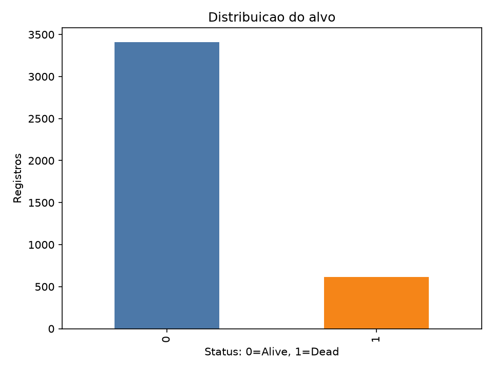
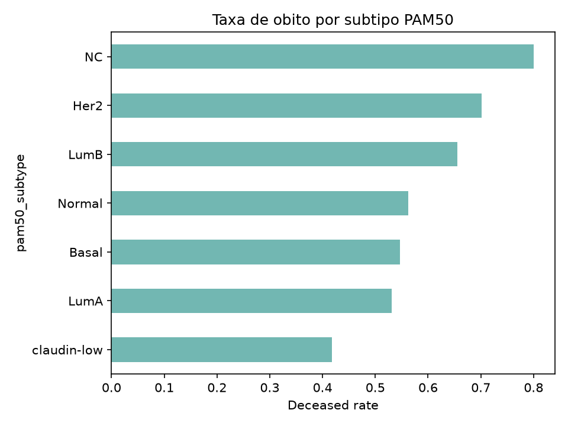
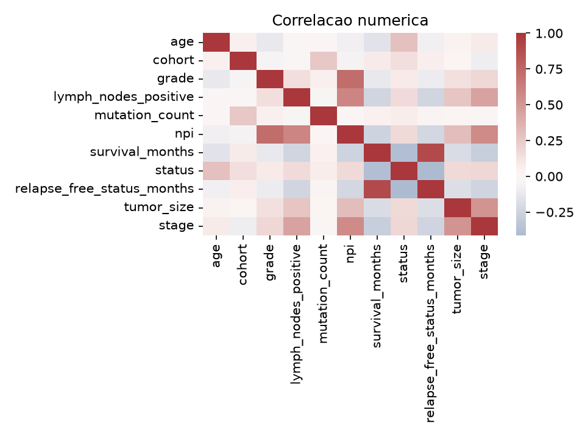
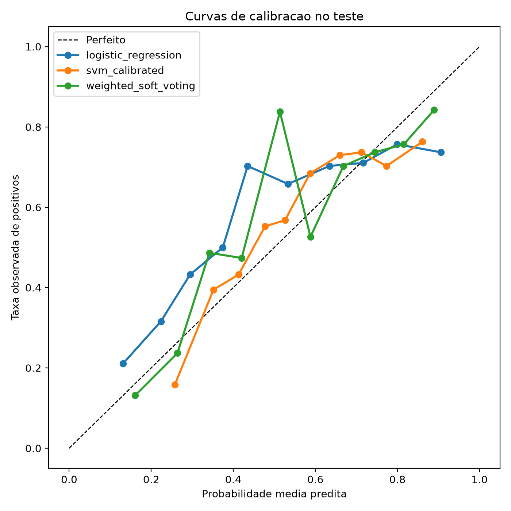
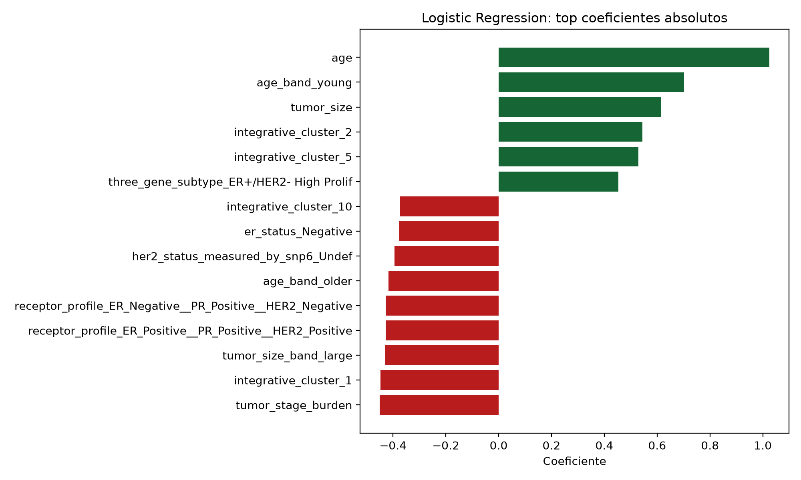

Sistema de Inteligencia Computacional para Risco de Obito em Cancer de Mama
Ensemble tabular com comparativo neuro-fuzzy: SEER corrigido e evolucao METABRIC
Inteligencia Computacional - UFPA
Roteiro da Apresentacao
Contexto, problema e datasets.
Arquitetura, pre-processamento, modelos e ensemble.
Metodologia, metricas, resultados e analise critica.
Conclusoes, limitacoes, trabalhos futuros e perguntas.
Estrutura alinhada ao modelo da avaliacao.
Contexto e Motivacao
- Classificacao supervisionada em saude.
- Dados tabulares clinicos e patologicos.
- Desbalanceamento e custo de falso negativo.
- Sistema inteligente com ensemble e comparativo neuro-fuzzy.
Acuracia isolada nao define o melhor modelo; a leitura prioriza recall, F2, PR AUC e falsos negativos.
Pergunta antecipada: por que nao escolher apenas pela acuracia?
Problema e Objetivo Corrigido
Classe positiva: Status = Dead
Classe positiva: Overall Survival Status = Deceased
Survival Months foi removido do modelo principal por risco de vazamento.
Pergunta antecipada: por que remover uma variavel tao preditiva?
SEER como Baseline e METABRIC como Evolucao Canonica
| Trilha | Papel | Registros analiticos | Diferencial |
|---|---|---|---|
| SEER | Baseline corrigido | 4.023 | Maior, mas menos profundo clinicamente |
| METABRIC | V2 canonica | 1.876 | Tratamento, ER/PR/HER2, PAM50, NPI e mutacoes |


Assets: target_distribution SEER e pam50_deceased_rate METABRIC.
Arquitetura Geral do Sistema
Neuro-fuzzy cooperativo com fuzzificacao manual + MLP foi mantido como componente academico comparativo.
Pre-processamento e Politica de Vazamento
- Sanitizacao centralizada.
- Dicionario de dados.
- Metadados e relacoes.
- Imputacao robusta e one-hot encoding.
- Exclusao de variaveis de vazamento.

Asset principal: numeric_correlation_heatmap METABRIC.
Modelos Inteligentes Utilizados
| Familia | Modelos |
|---|---|
| Baseline explicavel | Logistic Regression |
| Arvores e boosting | Random Forest, ExtraTrees, GradientBoosting, HistGradientBoosting, AdaBoost |
| Redes e kernel | MLP, SVM calibrado |
| Sistema combinado | Ensemble ponderado por soft voting |
| Hibrido academico | Neuro-fuzzy cooperativo |
Ensemble Ponderado e Neuro-fuzzy Cooperativo
Soft voting ponderado, pesos na validacao, threshold na validacao e teste preservado.
Fuzzificacao manual + MLP. Comparativo hibrido, nao ANFIS completo.
Pipeline de Treinamento e Validacao
- Teste nao foi usado para escolher threshold.
- Estabilidade avaliada por 5 seeds.
- Notebooks, relatorios e CSVs preservam rastreabilidade.
Metodologia Experimental
| Etapa | SEER | METABRIC |
|---|---|---|
| Dicionario e EDA | Sim | Sim |
| Politica de vazamento | Sim | Sim |
| Treino / validacao / teste | Sim | Sim |
| Ensemble validado | Sim | Sim |
| Explicabilidade e calibracao | Sim | Sim |
Metricas e Custo do Erro
Falso negativo recebe mais atencao que acuracia isolada.
Resultados dos Modelos Individuais
| Trilha | Modelo | Accuracy | Recall | F2 | PR AUC | FN |
|---|---|---|---|---|---|---|
| SEER | Logistic Regression | 0.6807 | 0.6098 | 0.4832 | 0.3525 | 48 |
| METABRIC | GradientBoosting | 0.7048 | 0.7953 | 0.7787 | 0.7600 | 44 |
Refs: model_comparison_no_leakage_test.csv nas duas trilhas.
Resultados do Ensemble e Neuro-fuzzy
| Trilha | Sistema | Threshold | Recall | F2 | FN | FP |
|---|---|---|---|---|---|---|
| SEER | Ensemble | 0.22 | 0.7642 | 0.5188 | 29 | 320 |
| METABRIC | Ensemble | 0.16 | 0.9953 | 0.8770 | 1 | 146 |
| SEER | Neuro-fuzzy | - | 0.2764 | 0.2886 | - | - |
| METABRIC | Neuro-fuzzy | - | 0.6512 | 0.6548 | - | - |
Comparacao Geral
Melhor dataset elevou o teto; ensemble deslocou o ponto operacional para alta sensibilidade.
Interpretacao Critica
Recall alto e forte reducao de falsos negativos no METABRIC.
Falsos positivos continuam relevantes, especialmente no ponto operacional agressivo.


Principais Conclusoes
- Corrigir vazamento e validacao tornou o experimento defensavel.
- METABRIC foi melhor para a pergunta por conter maior profundidade clinica.
- Ensemble foi util como ponto de alta sensibilidade.
- Neuro-fuzzy teve papel academico comparativo, nao superioridade empirica.
Limitacoes do Trabalho
- Datasets publicos, sem validacao clinica externa.
- Classificacao binaria, nao survival analysis formal.
- Neuro-fuzzy nao e ANFIS completo.
- SEER vs METABRIC nao e benchmark perfeito entre bases identicas.
- Falsos positivos ainda precisam ser controlados.
Trabalhos Futuros
Validacao externa e validacao cruzada repetida.
Survival analysis formal e analise de decisao por custo.
Explicabilidade local e calibragem fuzzy com especialista.
Encerramento / Perguntas
Bons dados e boa validacao foram mais importantes que complexidade isolada.
- Por que nao usar acuracia?
- Por que remover
Survival Months? - O ensemble foi ajustado no teste?
- O neuro-fuzzy e ANFIS?
- Como justificar falsos positivos?